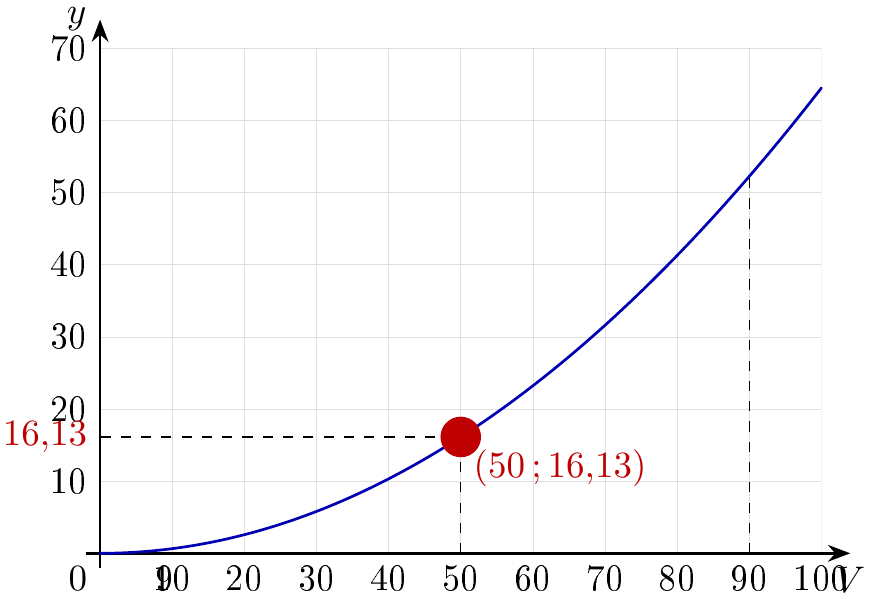
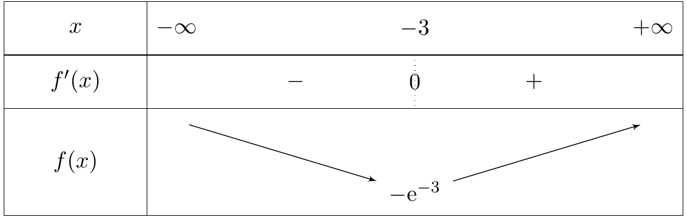

Chapitre 3 : Généralités sur les fonctions
Seconde · Chapitre 3 — Généralités sur les fonctions · cours de Frederik de Peyrelongue
I. Généralités sur les fonctions
Soit $D_{f}$ une partie de $\R$ (un ensemble de nombres réels). Lorsqu'on associe à tout nombre $x$ appartenant à $D_{f}$ un unique nombre $y$ réel, on définit une fonction numérique $f$ de l'ensemble de nombres $D_{f}$ vers $\R$.
On dit que $f$ est une fonction de la variable $x$.
On note parfois
Vocabulaire :
- $x$ est la variable ;
- $f(x)$ est l'image de $x$ par la fonction $f$ ;
- si $y=f(x)$, on dit que $x$ est un antécédent de $y$ par la fonction $f$ ;
- $D_{f}$ est l'ensemble de définition de la fonction $f$.
Dans l'activité 1, on a défini la fonction distance de freinage $f$. Sa courbe est donnée ci-dessous sur l'intervalle $[0\,;90]$ :

- $V$ est la variable ;
- l'image de $50$ par $f$ est $f(50)=\dfrac{50\times 50}{155}\approx 16{,}13$ ;
- un antécédent de $16{,}13$ par $f$ est $50$ ;
- la fonction $f$ est croissante sur $[0\,;90]$ : lorsque la vitesse augmente, la distance de freinage augmente !
Soit $f$ la fonction définie sur $\R$ par $f(x)=2x^{2}+x-1$.
- Calculer les images de $3$, $2{,}5$ et $0$ par la fonction $f$.
- Montrer que $-1$ et $0{,}5$ sont des antécédents de $0$ par la fonction $f$.
- L'image d'un nombre par une fonction, lorsqu'elle existe, est unique.
- Un nombre peut avoir un, plusieurs ou aucun antécédent par une fonction.
II. Courbe représentative d'une fonction
2.1 Notion de courbe représentative d'une fonction
Soit $D_{f}$ une partie de $\R$ et soit $f$ une fonction définie sur $D_{f}$. La représentation graphique de la fonction $f$ (ou sa courbe représentative) dans le repère $\left(O\,;I\,,J\right)$ est l'ensemble des points $M$ de coordonnées $\left(x\,;f(x)\right)$, où $x\in D_{f}$.
- L'abscisse $x$ prend toutes les valeurs de $D_{f}$.
- L'ordonnée $y$ est l'image de $x$ par $f$.
- On dit que la courbe représentative de $f$, notée $\mathcal{C}_{f}$, a pour équation $y=f(x)$.
2.2 Tracer une courbe représentative d'une fonction
Méthode : on dresse un tableau de valeurs de $f$ et on place les points de $\mathcal{C}_{f}$ ainsi connus dans le repère orthonormé $\left(O\,;I\,,J\right)$. Si $x$ est une variable « continue », on essaie de relier de façon harmonieuse les points entre eux.
Si $x$ est une variable à valeurs entières, on ne relie pas les points.
Un cercle ne peut être la représentation graphique d'une fonction, car l'image d'un point doit être unique.
III. Résolution graphique d'équation
Activité 2 : la courbe ci-dessous est la représentation graphique de la fonction $g$.

- Déterminer l'ensemble de définition de $g$.
- Lire les images de $-3$ et $2$ par $g$.
- Résoudre graphiquement, en justifiant, l'équation $g(x)=-3$.
- Résoudre graphiquement, en justifiant, l'équation $g(x)=5$.
- Résoudre graphiquement, en justifiant, l'inéquation $g(x)<2$.
- Résoudre graphiquement, en justifiant, l'inéquation $g(x)\geqslant -3$.
- Construire la droite d'équation $y=2x+1$.
- Résoudre graphiquement, en justifiant, l'inéquation $g(x)\geqslant 2x+1$.
- On admet que $g(x)=-x^{2}+2x+5$. Le point $P(-0{,}5\,;4)$ appartient-il à la courbe représentative de $g$ ? Justifier votre réponse.
Soient $k$ un nombre réel, $f$ une fonction et $\mathcal{C}_{f}$ sa courbe représentative.
Les solutions de l'équation $f(x)=k$ sont les abscisses des points d'intersection de $\mathcal{C}_{f}$ avec la droite d'équation $y=k$.
IV. Résolution graphique d'équation et d'inéquation
Soient $k$ un nombre réel, $f$ une fonction et $\mathcal{C}_{f}$ sa courbe représentative.
- Les solutions de l'inéquation $f(x)\leqslant k$ sont les abscisses des points de $\mathcal{C}_{f}$ situés en dessous de la droite d'équation $y=k$.
- Les solutions de l'inéquation $f(x)\geqslant k$ sont les abscisses des points de $\mathcal{C}_{f}$ situés au-dessus (ou sur) la droite d'équation $y=k$.
V. Résolution graphique d'équations du type $f(x)=g(x)$ et d'inéquations du type $f(x)>g(x)$
- Les solutions de l'équation $f(x)=g(x)$ sont les abscisses des points d'intersection entre la courbe $\mathcal{C}_{f}$ et la courbe $\mathcal{C}_{g}$.
- Les solutions de l'inéquation $f(x)\geqslant g(x)$ sont les abscisses des points de la courbe $\mathcal{C}_{f}$ qui se situent au-dessus ou sur la courbe $\mathcal{C}_{g}$.
- Les solutions de l'inéquation $f(x)>g(x)$ sont les abscisses des points de la courbe $\mathcal{C}_{f}$ qui se situent strictement au-dessus de la courbe $\mathcal{C}_{g}$.
- Les solutions de l'inéquation $f(x)\leqslant g(x)$ sont les abscisses des points de la courbe $\mathcal{C}_{f}$ qui se situent en dessous ou sur la courbe $\mathcal{C}_{g}$.
- Les solutions de l'inéquation $f(x)<g(x)$ sont les abscisses des points de la courbe $\mathcal{C}_{f}$ qui se situent strictement en dessous de la courbe $\mathcal{C}_{g}$.
Voici les courbes de deux fonctions $f$ et $g$ définies sur $[-4\,;4]$.
Résoudre graphiquement : $f(x)=g(x)$, puis $f(x)<g(x)$.

VI. Sens de variation
Une fonction $f$ est croissante sur un intervalle $I$ si elle conserve l'ordre : pour toutes valeurs réelles $a$ et $b$ de $I$ telles que $a<b$, on a $f(a)<f(b)$.
Une fonction $f$ est décroissante sur un intervalle $I$ si elle inverse l'ordre : pour toutes valeurs réelles $a$ et $b$ de $I$ telles que $a<b$, on a $f(a)>f(b)$.
Soit la fonction $f$ représentée sur l'intervalle $[-1\,;+\infty[$.

$f$ est décroissante sur $[-1\,;0]$, croissante sur $[0\,;1]$, décroissante sur $[1\,;3.2]$, puis enfin croissante sur $[3.2\,;+\infty[$.
On résume les variations de la fonction $f$ dans un tableau de variation :